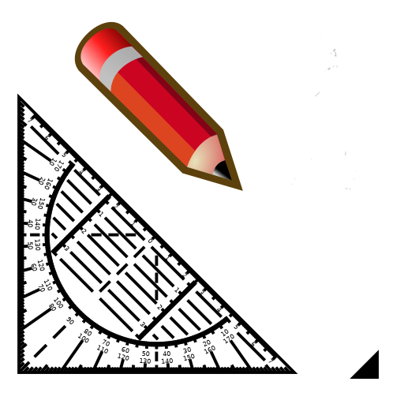
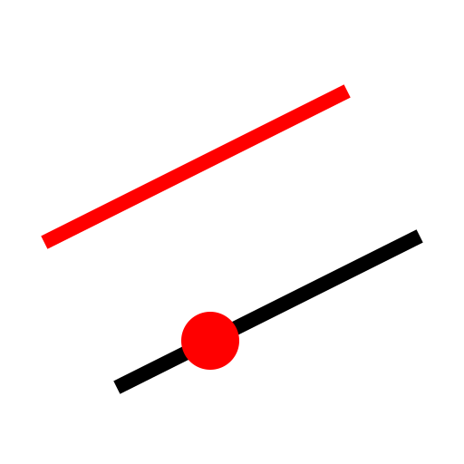

Versatz (durch Punkt)
Werkzeugleiste / Symbol:


Menü: Modifizieren > Versatz (durch Punkt)
Tastenkürzel: L, G
Kommandos: lineparallelthrough | lineoffsetthrough | offsetthrough | parallelthrough | lg
Beschreibung:
Mit diesem Werkzeug können Sie Parallelen zu existierenden Linien oder
konzentrische Kreise und Kreisbogen konstruieren. Die Parallele oder der
konzentrische Kreis oder Bogen geht durch einen angegebenen Punkt.
Vorgehensweise:
- Geben Sie die Anzahl zu erstellender Objekte in die Optionenwerkzeugleiste ein.
- Klicken Sie auf das bestehende Basisobjekt.
- Klicken Sie die Position durch welche die erste Parallele oder der erste
konzentrische Bogen oder Kreis gehen soll.